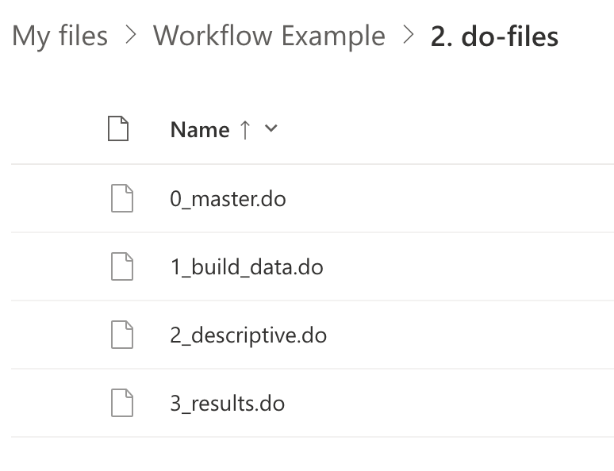

cd "/Users/fake_user/Library/CloudStorage/OneDrive-UBC"
dirECON 490: Stata Workflow Guide (18)
Prerequisites
- Knowledge of the content of the previous modules: macros, opening datasets, creating graphs, regression analysis.
Learning Outcomes
- Develop foundational skills and practices for workflow management in research and data applications.
- Improve coding style, especially for collaborative settings.
- Use the secure file-hosting service UBC One Drive to store, share, and synchronize folders.
- Implement conditional operators to automate workflow processes.
Significant credit for the content of the module must go to Asjad Naqvi and this very useful post on The Stata Guide on Medium
18.1 Introduction to Workflow Management
Structuring your files and folders early on can save you a lot of time and effort throughout your research project. The approach covered in this notebook will make it easier for you to keep track of your progress and reduce your workload. This approach will be particularly important if you are working in a group with several co-authors on one project.
In this module, we will discuss how to manage files and scripts as part of the research workflow. We will also cover how to stylize code to make it easy to read and replicate. While these are not strict rules, consider them guidelines for research and data management.
18.2 Setting Up the Directory
18.2.1 Main folder
Over the course of the research project, you are likely to accumulate numerous files for our project, including raw data files, do-files, tables, graphs and figures. In fact, there are often many versions of each of these files. You should start by creating a main folder or a “root” folder where all your project files and folders are organized. If you are working with other people, consider creating these folders on a shared drive such as UBC Microsoft One Drive. More on this in a moment.
Within the main folder, sort all your files into sub-folders similar to the structure shown below:

Each sub-folder consists of a specific category of files and is numbered to indicate the workflow:
- data: contains all the data files
- do_files: contains all the Stata do-files used to process, clean and analyze the data files
- log_files: contains all the Stata log-files
- tables: contains all the regression tables, summary statistics, etc.
- figures: contains all the graphs and figures
- literature: contains papers and documents related to your literature review
- paper: contains word documents or LaTeX files relating to the written part of your paper
- slides: contains presentation slides
Note: Avoid spaces, special characters or capital letters in your folder or file names. If you need to use spaces, you can use underscores _ . Consider numbering your files to indicate your workflow.
18.2.2 Do-files folder
It’s almost never a good idea to use one do-file for your entire project. Instead, create different do-files for different tasks and add descriptive labels to reflect your workflow. As mentioned in the previous section, prefix your files with numbers to align with the workflow sequence.

In the image above, the first do-file 1_build_data.do cleans the raw data and generates core variables that will be used in subsequent scripts. The second do-file 2_descriptive.do generates descriptive statistics and relevant figures. The third do-file 3_results.do runs the final regressions and generates regression tables. The master do-file 0_master.do runs all these other do-files. We will discuss its role in detail in a moment.
Note: Some researchers prefer to use different do-files for different figures and tables, which is completely fine as long as the files are labeled well. If you are generating different tables and figures within the same do-file, write them into separate code blocks within a do-file so that they can be easily distinguished.
18.2.3 Choosing good file names
While you are welcome to use your own naming conventions, it can be helpful to prefix your file names with numbers to align with your workflow; it is also a good idea to make these file names post-fixed with version numbers. Version numbers can be _v1, _v2 (i.e. “ECON490_logfile_v12.txt”) or they can be indicated by dates (i.e. “ECON490_logfile_230430.txt”).
Note: Following the yymmdd (year month date) format when using dates will automatically sort your files with the latest version at the top. Other date formats will not sort the files in the correct order and thus defeat the purpose of adding a post-fixed version number.
As you make progress with your project, you might find yourself collecting many versions of some of your files. As older versions become redundant, delete them or move them to a temporary folder. Creating a temporary folder for old do-files, tables, documents, etc. can be helpful in keeping your main folders neat if you are hesitant to delete them or if you are susceptible to digital hoarding (like many of us).
18.3 Setting up the Master do-file
18.3.1 Compiling do-files with the master do-file
You can think of the master do-file 0_master.do as a “compiler”: it runs all, or some, of the do-files for everything in your project. This Master do-file file should be structured something like this:
/* Project info */
clear
/* Directory settings: paths to folders, defined as globals */
/* Project settings: such as global variables and other macros */
/* Run the do-files: runs all of the do-files for the project */
The master file begins with project information usually included in a block comment followed by the clear command. We then establish our directory settings and then project settings, both of which have been defined below. The final component of the script is to run the do-files in our project.
Each of these three components is discussed in turn below with the code that will be included in this master do-file.
18.3.2 Directory settings
Above, we indicated that our Master do-file will contain directory settings. Here is an example of what those should look like. These lines should be included in your master do file.
There are two essential tools utilized in this master file: 1. Relative file paths 2. Macros (i.e. locals and globals)
As we learned in Module 4, macros store information either temporarily with local objects or permanently with global objects. Locals store information within a code instance and disappear once the instance ends. Globals are stored in memory until you close Stata, hence they are considered “permanent”.
In this workflow example, we will define the key paths in globals.
- The unique name of your project is stored in the global called proj_name.
- The path to your main folder (defined above) is stored in the global proj_main.
- Each sub-directory’s path has its own globals; for example, the path to the data folder is called data. Note that we don’t need to specify the full file path for each sub-directory, as it would be already included in the main folder. For example, for the data folder, we can simply use
${proj_main}/data.
Here is an example. You will have to edit this information for your own project.
*********************
* Directory Settings
*********************
global proj_name "Fake Project"
global proj_main "$file_path/projects/${proj_name}"
global datadir "${proj_main}/data" // Raw Files and Output from those
global figdir "${proj_main}/figures" // Figure path
global tabledir "${proj_main}/tables" // Tables Path
global do_dir "${proj_main}/do_files" // Do-files path
global log_dir "${proj_main}/logfiles" // Log-file pathSetting up the directory using globals can be very useful. Imagine that in the do-file called 1_build_data.do we want to load our data set saved under the file name fake_data.csv in the data folder data in a sub-directory called raw. Instead of defining the full file path of fake_data.csv, we can conveniently use our globals as follows:
import delimit using ${datadir}/raw/fake_data.csv, clearwhere we are telling Stata to go to the folder raw within the folder specified by the global datadir that we had defined earlier.
18.3.3 Run the do-files
The final component of the master do-file is the running of the do-files. Here you are given the simple example without using the project settings. The optional approach with those settings is further below.
As you know from Module 2, we run a do-file by using the command do followed by the file path of the appropriate do-file.
For example, if we wanted to run the do-file that builds the data 1_build_data.do that is stored in the folder indicated by the global do_dir, we would use the following command:
do "${do_dir}/1_build_data.do"In our master do-file, we would include the code for running all the do-files like this:
******************
* Run the do-files
******************
do "${do_dir}/1_build_data.do"
do "${do_dir}/2_descriptive.do"
do "${do_dir}/3_results.do"The master do-file simply runs all the project do-files in the appropriate order. Notice how the naming convention makes it easy to identify the sequence in which we need to run the do-files. File names are descriptive and sequentially numbered.
18.3.4 Using UBC Microsoft OneDrive
You have been asked to create a series of folders that will hold all of the information for your project. There are good reasons for keeping those folders on UBC OneDrive. You might, for example, want to be able to access that information when you are away from your computer (for example, working in a lab). You might (legitimately!!) be concerned that all of your hard work will be lost if your computer is damaged or stolen. Finally, you might be working on your project as part of a group - in which case file sharing will be necessary! Setting up OneDrive and installing the application on your own computer will resolve all of those issues.
UBC Microsoft OneDrive is a secure file-hosting service that allows you to store, share, and synchronize files and folders from any connected devices. You can learn how to store files on this service from the link provided above, but here we are going to cover how to access these files directly from Stata on any computer.
To begin, follow the instructions for your operating system to install the Microsoft OneDrive application on any computer that you want to work on. Once you complete this process, you will see that you have a new folder in your computer directory which contains all of the files in your OneDrive folder.
To see how this works, edit the command below to access that directory on your computer. You will need to determine the file path on your computer and edit the example path here. When you run this command, Stata will understand that it should use this directory moving forward. We have also included dir so that you can see your folders in that directory. If you have already set up the folders for your project, you will see them there.
Now whenever you include the file paths in your globals or in your do-files you can point to your UBC OneDrive folders, and always have access to the most recent version of your work!
18.4 Best Practices for Writing Code
There are three core practices that will make it easy to write, edit and understand your code:
- Adding comments.
- Splitting up your code into multiple lines.
- Indenting and spacing your code.
18.4.1 Commenting
Leaving comments will not only help you remember what you have done, but it will help your group members, your TA and your instructor understand your thought process.
There are three ways to comment in a Stata do-file:
* comments on individual lines
// comments on individual lines and after some code
/*
comments on multiple lines
like a "code block"
*/You can also use a series of asterisks * to format your do file and partition your code. In the 0_master.do example we saw earlier, the directory settings were highlighted as follows:
********************
* Directory Settings
********************Formatting your do-file in this manner creates visual bookmarks and highlights different sections of your script.
Another use for comments is to “comment out” code that you might be testing or might need later. Use an asterisk to comment out a line:
*gen log_earnings = log(earnings)Or comment out a block of code:
/*
label variable workerid "ID"
la var treated "Treatment Dummy"
la var earnings "Earnings"
la var year "Calendar Year"
*/Most importantly, leave comments before or after your code to explain what you did.
* Open Raw Data
import delimit using "${datadir}/raw/fake_data.csv", clear
la var birth_year "Year of Birth" // label variableAs we move on to writing more complex code, leaving comments will become more helpful.
18.4.2 Splitting the code across lines
In Stata, we can split code across multiple lines using three forward slashes ///. This can be particularly useful when making graphs. Let’s see an example to understand why. Imagine we want to create a graph overlaying information for treated workers and untreated workers, such that they are marked with two different colors (we will see in details how to do this in Module 9). The line of code to do it is:
twoway (connected log_earnings year if treated) || (connected log_earnings if !treated), ylabel(#8) xlabel(#10) ytitle("Log-earnings") xtitle("Year") legend( label(1 "Treated") label(2 "Control"))Making a graph has a lot of small components, all clustered together in a single line of code. If we had to go back and change the number of ticks for the x-axis xlabel(#), it is safe to say it might take us a moment to parse through all this code.
Now, let’s format this code block using /// to split it across multiple lines:
twoway ///
(connected log_earnings year if treated) || (connected log_earnings year if !treated) , ///
ylabel(#8) xlabel(#10) ///
ytitle("Log-earnings") xtitle("Year") ///
legend( label(1 "Treated") label(2 "Control"))Is it easier for you to find xlabel(#) this time around?
Using /// is a simple step we can take to make code blocks appear neat and legible.
18.4.3 Indent and space your code
Using indentations in your code and spacing it neatly can improve its readability with little effort. You can use the tab button on your keyboard to indent and organize your code. Let’s reformat the last example to see this in action.
twoway ///
(connected log_earnings year if treated) ///
|| ///
(connected log_earnings year if !treated) ///
, ///
ylabel(#8) ///
xlabel(#10) ///
ytitle("Log-earnings") ///
xtitle("Year") ///
legend( ///
label(1 "Treated") ///
label(2 "Control") ///
)This is the same code block as before, but it is significantly easier to read this time around. Try to find xlabel(#) once again. Do you notice any difference?
You might not want to indent your code on such a granular level as shown in the example above. That’s okay, as long as the code is organized in a way that is clear to you and your collaborators and is generally easy to understand.
18.4.4 Putting it all together
Let’s review a final example which combines all the code styling tools we have discussed so far:
twoway ///
(connected log_earnings year if treated) /// // log earnings, treated vs control group
|| ///
(connected log_earnings year if !treated) ///
, ///
ylabel(#8) /// // label ticks
xlabel(#10) ///
ytitle("Log-earnings") /// // axis titles
xtitle("Year") ///
legend( /// // legend labels
label(1 "Treated") ///
label(2 "Control") ///
)The comments in this example might seem unnecessary since the code is self-explanatory. However, depending on your familiarity with Stata (or coding in general) and the complexity of the code, adding comments that seem obvious at the time can be helpful when you revisit your work days or weeks later. As students of economics, we understand that there is an opportunity cost to everything, including time spent deciphering code we have already written.
18.5 More on Project Settings (optional)
Our workflow can be simplified by defining project settings in the master do-file that determine which do-files are run and whether or not log files are generated. You can think of project settings as a series of switches that you can switch on and off in your work. For example, you could turn the switch to “off” for the do-file that builds the data when the data has already been fully processed and saved in your folder, or you could the switch to “on” to create a log file when you want to keep a record of the run of the do-file.
If you choose to include project settings in your master do-file, you will need to include specific lines of codes in the project settings and in the run settings of the master do-file, as well as in the store_log settings of specific do-files. We will see each of the three components below.
18.5.1 Project settings
For each step of the process settings, we will create globals to do the following:
- Run globals that will switch on and off the running of the do-file (
run_build,run_descriptive,run_mainresults) - Store globals that will switch on and off the creation of the log-file (
store_log_build, etc.).
These process settings will look like this:
*******************
* Project Settings:
*******************
*Step 1: Build intermediate and final data set from raw data
global run_build = 1 // 0 = skip build step; 1 = run build.do
global store_log_build = 1 // 0 = don't save log file; 1 = save log file
*Step 2: Run descriptive analysis
global run_descriptive = 1 // 0 = skip; 1 = run
global store_log_descriptive = 1 // 0 = don't save log file; 1 = save log file
*Step 3: Run main results (e.g. regressions)
global run_mainresults = 1 // 0 = skip; 1 = run
global store_log_mainresults = 1 // 0 = don't save log file; 1 = save log fileAt this stage, our settings don’t mean much; we have simply created globals and assigned them a specific value. When we reference these globals in our master do-file and in other do files, these settings will become meaningful. The values you choose to assign these globals will determine which actions occur and which don’t.
run settings are referenced in two cases: 1. In the master do-file under the “run project” section. 2. In the beginning of the project do files, when required.
store_log settings are referenced in two cases: 1. Always at the beginning of the project do-files (excluding the master do-file). 2. Always at the end of the project do-files (excluding the master do-file).
These will be discussed in more detail below.
18.5.2 run settings
Let’s consider how we might now run our do-files in the master do-file if we are using the run settings.
******************
* Run the do-files
******************
if ${run_build}==1{
do "${do_dir}/1_build_data.do"
}
if ${run_descriptive}==1{
do "${do_dir}/2_descriptive.do"
}
if ${run_mainresults}==1{
do "${do_dir}/3_results.do"
}This is almost the same as the code block we saw earlier to run all our do-files. The key difference is that each command is nested within an [if] statement.
The [if] statements correspond to the global settings: IF the statement ${some_global}==1 is TRUE, THEN run the command in the curly brackets, which is do "filename". Can you guess what happens if the statement is FALSE?
There’s one missing piece in this story. The comments in the settings say that assigning a value of 0 to a global skips that action. You may have noticed, however, that the [if] statement would return as FALSE for any value of global run_build as long as it is not equal to 1.
We could set global run_build = 8 and Stata would still return the statement ${run_build}==1 as FALSE. The question remains: when does 0 become relevant?
To understand this, we have to think of our master do-file as a very long script that links all the other do-files together. Let’s consider a scenario where we want to skip the build step. This means our script begins with 2_descriptive.do; however, 2_descriptive.do includes commands to work with the data set we opened in 1_build_data.do. Note that we don’t open the data set in the beginning of each do-file over and over again. This means we need to add a condition in the beginning of the 2_descriptive.do script where we open the correct data set in the event we skip the first step.
if ${run_build}==0 {
use "${datadir}/final/main_data.dta", clear
}This clearly defines a situation where, if we skip the build data step, then we load the correct data set in Stata to run 2_descriptive.do .
Similarly, if we were to skip the first two steps, then we would have to load the correct data set to run the results (i.e. step 3). We include the following command in the beginning of 3_results.do to address this problem.
if ${run_build}==0 & ${run_descriptive}==0 {
use "${datadir}/final/main_data.dta", clear
}As you might have noticed, all scenarios where we skip a step are associated with if ${some_global}==0. As a result, we limit the values assigned to the global settings to 0 and 1.
18.5.3 store_log settings
Now let’s take a look at the store_log settings, which help us automate the process of storing log-files.
Imagine that all do-files except 0_master.do include the log command in the beginning and end of the file. The log command is nested within an [if] statement related to the global settings, exactly like we saw earlier.
*If log setting is activated, we record a log file in the log folder
if ${store_log_descriptive}==1 {
cap log close
log using "${log_dir}/2_descriptive.log", replace
}
.
.
.
*Close log if needed
if ${store_log_descriptive}==1 {
cap log close
}First, we start with an [if] statement which makes our global settings viable. Within the curly brackets we include cap log close to ensure that any open log-files from prior attempts are closed before we open the log-file. Then we use log using "${log_dir}/2_descriptive.log", replace which generates a log-file stored in the log directory log_dir (we defined this in the master file) and saves it under the name 2_descriptive.log. Finally, at the end of the script we include a command to close the log-file.
We include this code within each of the do-files, only changing the store_log global and the name of the log-file to match the appropriate step.
18.6 Wrap Up
In this notebook, we looked at how to use UBC OneDrive to securely store projects. We explored how to structure a project directory, how to name files, and how to separate scripts. We also discussed important file types to include and best practices for coding more generally. Finally, we looked at how to use globals to improve the functionality of our master do-file.
18.7 Video tutorial
Click on the image below for a video tutorial on this module.